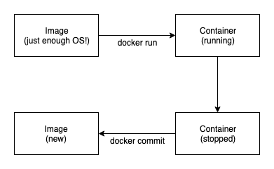
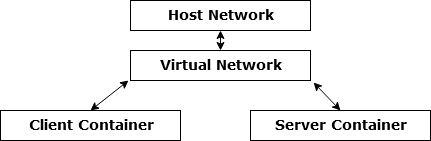

Docker
(Handy hint - finding the versions of ubuntu you’re using:- cat /etc/lsb-release)
Useful commands
docker info docker version - provides more info than docker --version
Images
docker images - lists all the docker images docker rm \<image id> - removes the image
Name structure:- registry.example.com:port/organisation/image-name:version-tag Normally you can leave out the “registry.example.com:port” docker pull -> useful to pull images down ahead of time so you ca work on them when off line.
Images can accumulate quickly
docker rmi <image-name:tag> - removes the image
Can also use docker rmi <image id>
Containers
| command | action |
|---|---|
| docker ps | list containers (running only) |
| docker ps -a | list containers (all) |
| docker start \<containerID> | |
| docker stop \<containerID> | |
| docker restart \<containerID> | |
| docker container start \<containerID> | |
| docker container stop \<containerID> | |
| docker container restart \<containerID> | |
| docker container ls same as docker ps | |
| docker container ls -a same as docker ps -a |
Docker Flow

Commit
docker commit <container name>
Docker tag <sha 256 code from commit> <new image name>
Docker commit <new image name>:<tags>. (If any tags available)
Run
docker run -ti ubuntu:latest bash
-ti - terminal interactive Bash - process to run inside container :latest version of ubuntu to run
docker run -ti ubuntu bash -c “sleep 3; echo all done”
Omitting the tag means docker will run the latest version -c means run a command, followed by the commands to run in the process
docker run —rm
—rm remove the container after it exits
docker exec -ti <container name> bash
Executes another process in container, useful for debugging but cannot change ports or volumes
Detaching
docker run -d
Runs in detached mode
Or ^ P ^ Q will detach the currently running container
docker attach <container name> - reattaches the container to the terminal
Listing Containers
docker ps - show running containers
docker ps -a - show all containers
docker ps -l - show last container
docker ps —format = $FORMAT
$FORMAT = \nID\t{{.ID}}\nIMAGE\t{{.Image}}\nCREATED\t{{.Running}}\nCOMMAND\t{{.Running}}\nSTATUS\t{{.Status}}\nPORT\t{{.Ports}}\nNAMES\t{{.Names}}\n
Managing Containers
docker logs
output of container (don’t let output get too large -> impacts on performance
Constraining resources
Memory:
docker run —memory <max allowed memory> <image name> <command>
CPU:
docker run —cpu-shares <relative to the containers>
docker run —cpu-quota <limit in general>
Lessons from the field
- Don’t let containers fetch dependencies at the start (if a dependency is removed, it breaks your container) - include the dependency inside your container
- Don’t leave important stuff inside unnamed, stopped containers
Volumes
These are virtual discs to shared and store data (between hosts and containers) There are two main types
- persistent
- ephemeral (i.e. temporary)
They are NOT part of the images.
Sharing Data with Host
Works like VM “shared folders”
docker run -ti -v /home/user/folder:/shared-folder ubuntu bash
/home/user/folder is the file path on the host /shared-folder is the path in the container
This can also be done with files
-v /home/user/readme.txt:/readme.txt
Note: the file must exist before the container is run, otherwise its assumed to be a folder.
Sharing between containers
Start up first container with:
docker run -v /shared-data …. —name my-container
( -v /shared-data means that the folder only exists in the container)
Start up the other container:
docker run —volumes-from my-container …
Now both containers have a /shared-data folder shared between them. /shared-data exists as long as ONE container is sharing it.
Docker registries
- Registries manage and distribue images
- The docker company offers these for free
- Can also run your own
docker search <name> - search for image (or use hub.docker.com)
docker login -> log in to docker hub, creates token on local machine
docker pull debian:sid
docker tag debian:sid my-docker-id/new-image-name:v23
docker push my-docker-id/new-image-name:v23
Things to be aware of with registries
- DON’T push images containing passwords
- Clean up your images regularly
- Be aware of how much you are trusting containers that you fetch
Connecting Containers
Legacy Linking
Set environment variables inside linking container for host and port -> old (legacy) system
IP address Binding
Services that listen ‘locally’ by default are only available in the container. To allow connections, you need to use the ‘bind address 0.0.0.0’ inside the container.
Use docker to limit access to the host only, e.g.
docker run -p 127.0.0.1:1234:1234/tcp
127.0.0.1 -> only from the host
Private Container Network
Can group containers into 'private' networks. Can explicitly chose who can connect to who. Done by exposing ports and linking containers - docker helps you find other exposed ports with Compose services
Exposing Ports
can be done inside and outside the container
docker run -p outside(host):inside(container)
e.g.
docker run -p 40000:50000 -p 40001:50001 ubuntu:14.04
ports 40000 and 40001 are on the host (outside) ports 50000 and 50001 are in the container (inside)
Exposing Ports Dynamically
Example
docker run -port 50000 -port 50001 --name echo-server ubuntu:14.04
ports 50000 and 50001 are inside the container. To find the host ports mapped to these, use:-
docker port echo-server
This should produce an output like:-
50000/tcp -> 0.0.0.0:32770
50001/tcp -> 0.0.0.0:32771
Allows many containers running fixed ports - no need to worry about conflicts - often used with a service discovery program.
UDP Ports
docker run -p 12345:12345/udp
Can also specify /tcp, but tcp is the default anyway.
Connecting between containers

Linking Directly
- generally used with orchestration
- links all ports but only one way
- only for services that cannot be run on different machines
- e.g. a service and health check that monitors it
- services and its db? Probably NOT a good idea
e.g.
docker run --rm -ti --link [server]
--link [server] - [server] is the name of the container to link to. Can then use this name to connect to server inside docker
Dynamic Linking
- Docker has private networks
- private networks have built in name servers that fix links
- MUST create the networks in advance
docker network create <network name>
This allows the link to be broken and recreated - e.g. if a server container is stopped, it can then be restarted and the namespace server with recreate the link.
For example
docker network create my_network
docker run --net=my_network --name server ubuntu bash
docker run --link server --net=my_network --client ubuntu bash
Commands
docker network create <name>
docker network ls
docker network prune
docker network rm <name>
docker network connect [OPTIONS] <network> <container>
docker network disconnect -f <network> <container>